승강기산업기사 (2005-09-04 기출문제)
1과목: 승강기개론
1. 카 문지방(car sill)과 승강로 벽과의 틈새는 몇㎝ 이하로 하여야 하는가?
- 10.5
- 12.5
- 14.5
- 16.5
(정답률: 77%)

2. 엘리베이터의 꼭대기 틈새의 개념으로 맞는 것은?
- 카를 최상층에 정지시켜 놓은 상태에서 카의 천장과 승강로 천장부와의 수직거리
- 카를 최상층에 정지시켜 놓은 상태에서 카위에서 최고 높이 장착된 부품과 승강로 천장부와 의 수직거리
- 카를 최상층에 정지시켜 놓은 상태에서 카의 상부체대와 승강로 천장부와의 수직거리
- 카를 최상층에 정지시켜 놓은 상태에서 카의 가이드 슈와 승강로 천장부와의 수직거리
(정답률: 44%)
3. 승객용 엘리베이터에서 로프를 2 : 1 로 걸었을때 카의 속도와 균형추의 속도에 대한 설명으로 옳은 것은?
- 카와 균형추의 속도가 같다.
- 카가 균형추보다 빠르다.
- 균형추가 카보다 빠르다.
- 하강할 때는 균형추가, 상승할 때는 카가 빠르다.
(정답률: 74%)
4. 유압 엘리베이터에서 실린더의 안전율은 최소 얼마 이상이어야 하는가?
- 2
- 4
- 6
- 8
(정답률: 40%)
5. 스프링완충기의 적용 범위는?
- 정격속도 45m/min 이하
- 정격속도 60m/min 이하
- 정격속도 60~90m/min 이하
- 정격속도 90~1⑤m/min 이하
(정답률: 77%)
6. 유압식 엘리베이터에서 카의 상승시 유압이 이상하게 증대한 경우에, 작동압력이 상용압력의 몇 배를 초과하지 않을 때 자동적으로 작동을 개시하고, 작동압력이 상용압력의 1.5배를 초과 하지 않도록 하는 장치를 설치하여야 하는가?
- 1.1 배
- 1.15 배
- 1.2 배
- 1.25 배
(정답률: 72%)
7. 승강기용 전동기에 관한 설명으로 틀린 것은?
- 기동토크가 일반 전동기보다 일반적으로 커야한다.
- 최소 회전력은 +100%에서 -70%이상이어야 한다.
- 회전속도 오차는 ±20%범위 내에 있어야 한다.
- 기동 빈도가 높아서 일반 전동기보다 발열량이 많다.
(정답률: 46%)
8. 엘리베이터를 3~8대 병설하여 운행관리하며, 출퇴근시의 피큼수요, 점심시간 및 회의 종료 시 등에 특정 층의 혼잡등을 자동적으로 판단하고 서비스층을 분할하거나 집중적으로 카를 배치운 행하는 조작방식은?
- 하강승합전자동식
- 승합전자동식
- 군승합전자동식
- 군관리방식
(정답률: 84%)
9. 교류 엘리베이터의 제어의 종류가 아닌 것은?
- 교류 일단 속도제어
- 교류 이단 속도제어
- 교류 궤환 전압제어
- 교류 궤환 저항제어
(정답률: 87%)
10. 관성에 의한 전동기의 회전을 자동적으로 제지하는 안전장치는 무엇인가?
- 브레이크
- 조속기
- 완충기
- 비상정지장치
(정답률: 62%)
11. 다음 중 도어 안전장치가 아닌 것은?
- 세이프티 슈
- 광전장치
- 초음파 장치
- 역 결상 검출 장치
(정답률: 68%)
12. 에스컬레이터의 특징에 대한 설명 중 틀린 것은?
- 기다림 없이 연속적으로 승객 수송이 가능하다.
- 엘리베이터에 비해 수송능력이 7 ~ 10배 이다.
- 하중이 건축물의 각 층에 분담되어 있다.
- 사용 전력량이 많지만 전동기의 전동 회수는 엘리베이터에 비해 극히 적다.
(정답률: 81%)
13. 카의 속도가 정격속도를 초과하여 정격속도의 140%이하에서 로프가 절단되거나 기타의 원인 으로 카가 급강하 할 때 이와 같이 속도를 조속기나 또는 기타의 장치가 감지하여 작동하므로서 카를 정지시키는 장치는?
- 인터록장치
- 전자감응장치
- 비상정지장치
- 록다운정지장치
(정답률: 67%)
14. 적재하중 100[㎏], 정격속도 60m/min, 오버밸 런스율 40%, 총합효율 60%일 때 권상전동기의 용량은 약 몇 [㎾인가?
- 5.9
- 6.5
- 7.5
- 9.8
(정답률: 71%)
15. 카 주행 중 어린이가 장난으로 도어를 여는 것 을 방지하기 위하여 손으로 도어를 여는데 몇 [kgf]정도가 필요하도록 카 도어를 만드는가?
- 5
- 10
- 15
- 20
(정답률: 72%)
16. 승강로의 출입구에 대한 설명으로 옳은 것은?
- 자동차용은 하나의 층에 2개의 출입구를 설치 할 수 있으나 2개의 문이 동시에 열려 통로로 사용되어서는 아니된다.
- 침대용은 2개의 출입구문이 동시에 열려도 된 다.
- 화물용은 하나의 층에 하나의 출입구만을 설치 하여야 한다.
- 인화용은 하나의 층에 2개의 출입구를 설치하고, 2개의 문은 동시에 열리는 구조이어야 한다.
(정답률: 76%)
17. 그림과 같은 속도곡선에 대한 설명으로 옳은 것은?
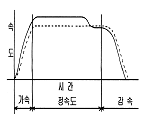
- 전속주행 중에는 보통 교류 전동기로 카를 일 정속도로 주행시킨다.
- 점선은 지령속도이고 실선은 실제속이다.
- 저속 주행 때문에 운전시간이 길다.
- 교류 이단제어의 속도곡선이다.
(정답률: 35%)
18. 로프 소선의 파단이 1개소 또는 특정의 꼬임에 집중되어 있는 경우, 소선의 파단 총수가 1꼬임 피치내에서 몇 개 이하로 되어야 합격인가?
- 6꼬임 와이어로프이면 18 이하
- 6꼬임 와이어로프이면 24 이하
- 8꼬임 와이어로프이면 16 이하
- 8꼬임 와이어로프이면 24 이하
(정답률: 65%)
19. 유압엘리베이터에서는 유압펌프나 제어밸브 등 에서 압력맥동이 발생하는데, 이를 흡수하여 진동이나 소음을 감소시키는 장치는?
- 사이렌서
- 스트레이너
- 압력계
- 라인필터
(정답률: 77%)
20. 견인비(Traction ratio)무부하와 전부하에서 체크하고 그 값을 낮게 선택하는 이유는?
- 로프 길이를 줄이기 위하여
- 로프의 손상과 전동기의 용량을 줄이기 위하여
- 로프 본수를 줄이고 마찰력을 증대하기 위하여
- 균형추의 무게를 줄이고 로프 본수를 줄이기 위하여
(정답률: 69%)
2과목: 승강기설계
21. 장애인용 엘리베이터에 대한 설계방법으로 옳지 않은 것은?
- 모든 조작스위치는 바닥으로부터 0.8m 이상 1.2m 이하에 있도록 설계할 것
- 출입문의 너비를 0.8m 이상으로 설계할 것
- 엘리베이터 밖에 바닥과 엘리베이터 바닥사이 의 틈의 너비는 10㎝ 이하가 되도록 설계할 것
- 카 출입문의 마주보는 벽면에는 거울을 설치할 것
(정답률: 68%)
22. 직접식 유압엘리베이터에서 하부 프레임 재료 의 인장강도가 4,100kg/cm2, 단면계수가 70cm3, 하부 프레임에 걸리는 최대 굽힘 모멘트가 20,300kg∙㎝ 일 때 안전율은 약 얼마인가?
- 4.1
- 8.2
- 14.1
- 18.2
(정답률: 56%)
23. 케이지의 무게가 850kg 이고 적재용량이 800kg 오버밸런스율이 45%일 때 균형추의 총 중량은 몇 kg인가?
- 1,000
- 1,150
- 1,210
- 1,650
(정답률: 68%)
24. 엘리베이터에 있어서 대책을 요하는 재해의 종류로 볼 수 없는 것은?
- 고장
- 지진
- 화재
- 정전
(정답률: 75%)
25. 균형추용 레일의 내진 설계 시 고려하여 할 사항으로 적합하지 못한 것은?
- 균형추 쪽에 타이브래킷을 설치한다.
- 중간 빔을 설치한다.
- 균형추에 중간 스톱퍼를 설치한다.
- 레일 브래킷의 간격을 줄인다.
(정답률: 72%)
26. 재료의 극한 강도가 허용응력의 몇 배인가를 표시하는 수치를 무엇이라고 하는가?
- 탄성계수
- 포아송 수
- 안전계수
- 영 계수
(정답률: 43%)
27. 교류 2단속도 승강기의 회전 방향을 바꾸려면?
- 전동기 입력전원의 3선 중 임의의 두 개의 선 접속을 바꾼다.
- 전동기 극수를 바꾼다.
- 전동기 접속을 △에서 Y로 바꾼다.
- 전류를 변화시킨다.
(정답률: 70%)
28. 승강로 구출구의 구조로 적합하지 않은 것은?
- 크기는 폭 750㎜ 이상, 높이 1200㎜ 이상으로 한다.
- 도어가 자동적으로 닫히는 장치를 설치한다.
- 구조는 갑종 방호 또는 을종 방호 기준에 적합 해야 한다.
- 도어가 닫혀 있지 않더라도 카가 움직일 수 있어서 승객 구출이 용이해야 한다.
(정답률: 67%)
29. 엘리베이터의 설계용 지진력을 계산할 때 수평 진도 Kh와 수직진도 Kv의 관계를 바르게 나타낸 것은?
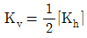
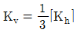
- Kv=2Kh
- Kv=3Kh
(정답률: 44%)
30. 정격속도 150m/min의 조속기의 과속스위치를 셋팅 하려고 한다. 다음 중 조속기의 과속 스위치 셋팅 값이 바르게 조정된 것은?
- 170m/min
- 200m/min
- 230m/min
- 260m/min
(정답률: 28%)
31. 엘리베이터 동력저원 설계시 부등률에 대한 설명으로 틀린 것은?
- 교통량이 많은 건물에서는 부등률이 크다.
- 엘리베이터 기동빈도와 밀접한 관계가 있다.
- 동일 건물내 비상용의 경우는 100% 동시 사용으로 본다.
- 2대의 엘리베이터에 대하여는 전부하 상승가 속전류에 대한 부등률 포함 대수는 2이상이다.
(정답률: 55%)
32. 에스컬레이터의 트러스의 안전율은 얼마 이상 이어야하는가?
- 5
- 6
- 7
- 8
(정답률: 40%)
33. 전동 덤웨이터의 기계실의 천장 높이는 최소 몇 ㎝ 이상 확보되어야 하는가?
- 60
- 70
- 80
- 100
(정답률: 63%)
34. 단말정차장치(TERMINAL STOPPING DEVICE)의 형 식에 해당되지 않는 것은?
- 턴버클 조작식
- 기계식 조작식
- 자기적 조작식
- 광학적 조작식
(정답률: 71%)
35. 엘리베이터의 카 및 균형추용 와이어로프 및 그 연결부위에 대한 설명으로 틀린 것은?
- 로프의 안전계수는 카의 정격속도에 대응하는 로프 실제 속도에 따라 달라진다.
- 로프의 안전계수에 대한 공식은
 으로 표시되면, S는 로프의 정격 파괴강도, N은 로프 가닥수, W는 정격부하를 싣 고 상승시 모든 카 로프에 걸리는 최대 부하이다.
으로 표시되면, S는 로프의 정격 파괴강도, N은 로프 가닥수, W는 정격부하를 싣 고 상승시 모든 카 로프에 걸리는 최대 부하이다. - 드럼식의 권상로프는 카가 완전히 압축된 완충 기 위에 얹힐 때 드럼에 감긴 로프가 2바퀴 이상 남아야 한다.
- 로프소켓과 사클로드가 하나로 된 단위구조의 경우 고정구 전체를 주조강으로 한다.
(정답률: 45%)
36. 엘리베이터의 교통량 계산기에 필요한 제반 정 보사항이 아닌 것은?
- 빌딩의 용도
- 층별 인구
- 엘리베이터의 용량과 속도
- 엘리베이터의 의장
(정답률: 69%)
37. 그림과 같은 단순보에서 W=200kg, a=400㎝, b=600㎝ 일 때, B점에서 발생하는 회전모멘트는 몇 ㎏∙㎝인가?
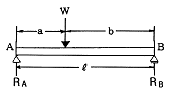
- 40
- 60
- 80
- 100
(정답률: 34%)
38. 엘리베이터의 권상기용 와이어 로프의 조건 중 옳지 않은 것은?
- 직경은 공칭지름 12㎜ 이상일 것
- 권상식 엘리베이터의 경우에는 카 1대에 대해 3본 이상일 것
- 승객용 엘리베이터의 경우, 안전율은 10이상 일 것
- 화물용 엘리베이터의 경우, 안전율은 4이상일 것
(정답률: 56%)
39. 다음과 같은 전동기의 절연등급 중 가장 높은 온도까지 견딜 수 있는 것은?
- A종
- E종
- H종
- F종
(정답률: 70%)
40. 카가 정지하거나 동력이 차단되었을 때 문을 손으로 여는 경우의 힘은 몇 kgf 정도로 설계 하여야 하는가?
- 5~30
- 15~45
- 20~50
- 30~60
(정답률: 71%)
3과목: 일반기계공학
41. 다음 중 AI 합금으로 자동차가나 항공기의 실린더에 많이 사용되는 합금은?
- 고속도강
- KS강
- 실루민
- Y합금
(정답률: 70%)
42. 1N의 힘은 몇 ㎏중 인가?
- 1/9.8
- 1/980
- 980
- 9.8
(정답률: 52%)
43. 그림과 같이 주어진 구조물에 인장하중이 작용 할 때 구조물의 자중을 고려해서 최대응력이 발생하는 지점은?
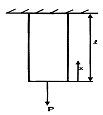
- X=0
- X=1/2
- X=1
- 모든 위치에서 동일
(정답률: 39%)
44. 다음 중 Fe - C 상태도에서 탄소가 약 6.67% 함유되었을 때 나타날 수 있는 탄화철은?
- 시멘타이트
- 페라이트
- 오스테나이트
- 펄라이트
(정답률: 69%)
45. 내면이 원추형인 원통에 2개의 원추키 모양의 슬릿을 가진 원추를 넣고 3개의 볼트로 죄어 두 축을 연결하는 것은?
- 슬리브 커플링
- 분할 머프 커플링
- 셀러 커플링
- 플랜지 커플링
(정답률: 40%)
46. 나사의 풀림 방지 방법이 아닌 것은?
- 로크너트(lock nut)를 사용한다.
- 분할핀(split pin)을 사용한다.
- 세트스크류(set screw)를 사용한다.
- 아이 볼트(eye bolt)를 사용한다.
(정답률: 76%)
47. 다음 유압기기의 구성요소 중 유압 액튜에이 터인 것은?
- 유압 펌프
- 유량 실린더
- 제어 밸브
- 유압 조절밸브
(정답률: 57%)
48. 부동속형 유니버설 조인트에서 2축의 교각은 일반적으로 몇 도가 적합한가?
- 10° 이하
- 20° 이하
- 30° 이하
- 50° 이하
(정답률: 74%)
49. 판의 두께 15㎜, 리벳의 지름 16㎜, 리벳 구멍의 지름 17㎜, 피치 65㎜ 인 1 줄 리벳 겹치기 이음에서 1 피치마다 1500kgf 의 하중이 작용 할 때 판의 효율은?
- 73.8%
- 75.4%
- 76.9%
- 77.5%
(정답률: 30%)
50. 지름 30㎜, 길이 200㎜ 인 둥근봉에 인장하중 이 작용하여 길이가 200, 12㎜로 늘어났다. 세로변형률은 얼마인가?
- 15×10-2
- 15×10-3
- 6×10-3
- 6×10-4
(정답률: 35%)
51. 다음은 전단가공의 종류에 대한 설명이다. 틀린 것은?
- 블랭킹(blanking) : 펀치로 판재를 필요한 치수의 모양으로 따내는 작업
- 전단(shearing) : 판재를 필요한 길이의 치수로 절단하는 작업
- 셰이빙(shaving) : 드로잉을 한 제품의 귀 또는 단조품의 거스러미를 제거하는 작업
- 피어싱(piercing) : 필요한 치수 모양으로 구멍을 만드는 작업
(정답률: 53%)
52. 공작기계로 공작물을 절삭할 때는 절삭저항이 발생하는데 절삭저항에 해당되지 않는 것은?
- 주분력
- 배분력
- 횡분력(이송분력)
- 치핑(Chipping)
(정답률: 77%)
53. 선반작업에서 공작물의 지름을 D[㎜], 1분간의 회전수를 N[rpm]이라고 할 때 절삭속도 V 는 몇 m/min인가?
- V=πDN
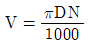
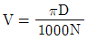
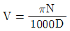
(정답률: 83%)
54. 관로내를 흐르는 유체의 평균유속이 3 m/sec 이고, 유량이 9.9m3/sec일 때 관의 단면적은?
- 3.3m2
- 29.7m2
- 0.3m2
- 1.65m2
(정답률: 63%)
55. 축에는 키 홈이 없고, 축의 원호에 접할 수 있도록 하고 보스에 만 키 홈을 파는 경하중용에 사용하는 키는?
- 안장 키
- 접선 키
- 평 키
- 반달 키
(정답률: 82%)
56. 3000kgf-cm의 비틀림 모멘트가 작용하는 지름 10[㎝] 환봉축의 최대 전단응력은 몇 kgf/cm2인가?
- 21.28
- 17.59
- 15.28
- 13.42
(정답률: 36%)
57. 2개의 회전하고 있는 롤러 사이에 소재를 통과 시켜 단면적을 감소시켜 길이를 늘리는 소성가 공 방법은?
- 압출
- 인발
- 압연
- 단조
(정답률: 71%)
58. 조립된 기계부품의 세부항목에 대한 안전율을 결정하는데는 여러 가지 변수가 있다. 안전율 을 결정하는 요소가 아닌 것은?
- 재료의 품질
- 하중과 응력 계산의 정확성
- 공작기계의 정도
- 하중의 종류에 따른 응력의 성질
(정답률: 66%)
59. 절삭공구의 수명이 종료되어 공구를 다시 연삭 하거나 새로운 절삭공구로 바꾸기 위한 공구수 명 판정방법이 잘못 된 것은?
- 가공면에 광택이 있는 색조나 반점이 생길 때
- 공구인선의 마모가 일정량에 도달하였을 때
- 와성치수의 변화량이 일정량에 도달했을 때
- 절삭저항의 이송분력과 배분력이 급격히 감소 할 때
(정답률: 35%)
60. Kelmet 메탈을 옳게 설명한 것은?
- 동에 주석을 30~40% 가한 것이다.
- 동에 철을 30~40% 가한 것이다.
- 동에 인을 30~40% 가한 것이다.
- 동에 납을 30~40% 가한 것이다.
(정답률: 49%)
4과목: 전기제어공학
61. 무효전력을 나타내는 단위는?
- VA
- W
- Var
- Wh
(정답률: 91%)
62. 5[Ω]의 저항 10개를 직렬로 연결했을 경우의 합성저항은 병렬로 연결했을 경우의 몇 배인가 ?
- 10
- 50
- 100
- 500
(정답률: 62%)
63. 논리함수 X=B(A+B)를 간단히 하면?
- X=A
- X=B
- X=A∙B
- X=A+B
(정답률: 75%)
64. 다이리스터를 이용한 정류회로에서 직류전압의 맥동률이 가장 작은 정류회로는?
- 단상반파 정류회로
- 단상전파 정류회로
- 3상반파 정류회로
- 3상전파 정류회로
(정답률: 79%)
65. 제어요소는 무엇으로 구성되는가?
- 입력부와 조절부
- 출력부와 검출부
- 피드백 동작부
- 조작부와 조절부
(정답률: 77%)
66. 공기 중에서 10[㎝] 떨어져 평행으로 놓여진 2 개의 무한히 긴 도선에 왕복 전류가 흐를 때, 단위 길이 당 0.04N의 힘이 작용한다면 이 때 흐르는 전류는 몇A인가?
- 121
- 141
- 151
- 161
(정답률: 49%)
67. 그림과 같이 유접점 회로의 논리식과 논리명칭 으로 옳은 것은?
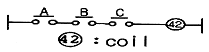
 , NOT회로
, NOT회로 , NOT회로
, NOT회로- F=A+B+C, OR 회로
- F=A∙B∙C, AND 회로
(정답률: 71%)
68. 변압기의 정격 1차전압에 대한 설명으로 옳은 것은?
- 전부하를 걸었을 때의 1차 전압
- 무부하에 있어서 1차전압
- 정격 2차 전압에 권수비를 곱한 것
- 정격 2차 전압에 임피던스 전압을 가한 것
(정답률: 78%)
69. 농형 유도전동기의 기동법이 아닌 것은?
- 전전압기동법
- 기동보상기법
- Y-△기동법
- 2차저항법
(정답률: 70%)
70. 단상변압기를 이용하여 △ 결선을 한 경우 선간전압은 상전압과 어떤 관계에 있는가?
- 상전압이 선간전압보다 √3배 많다.
- 선간전압이 상전압보다 √3배 많다.
- 선간전압은 상전압의 3배이다.
- 선간전압과 상전압은 같다.
(정답률: 40%)
71. 어떤 회로의 전압이 V[V]이고 전류가 I[A]이며 저항이 R[Ω] 일 때 저항이 10% 감소되면 그 때의 전류는 처음 전류 I 의 몇 배인가?
- 1.11
- 1.41
- 1.73
- 2.82
(정답률: 52%)
72. 전달함수를 정의할 때의 조건으로 옳은 것은?
- 모든 초기값을 고려한다.
- 모든 초기값을 0 으로 한다.
- 입력신호만을 고려한다.
- 주파수 특성만을 고려한다.
(정답률: 72%)
73. 조작기기의 종류를 전기계와 기계계로 분류 할 때 기계계에 해당되는 것은?
- 서보전동기
- 펄스진동기
- 전동밸브
- 다이아프램
(정답률: 49%)
74. 동력 1 마력을 전력으로 환산하면 약 몇 W인가?
- 436
- 539
- 646
- 746
(정답률: 68%)
75. 연산증폭기의 특성 중 틀린 것은?
- 전압증폭도가 무한대이다.
- 입력저항이 무한대이다.
- 증폭주파수 대역이 무한대이다.
- 출력저항이 무한대이다.
(정답률: 45%)
76. 교류 대전류의 계측에 사용되는 것은?
- 진동검류계
- 계기용변압기
- 계기용변류기
- 교류전위차계
(정답률: 54%)
77. 어떤 제어계의 임펄스 응답이 sin ωt일 때 계의 전달 함수는?
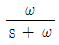
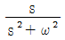
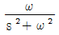
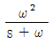
(정답률: 83%)
78. 피드백제어계 중 물체의 위치, 방위, 자세 등 의 기계적 변위를 제어량으로 하는 것은?
- 서보기구
- 프로세스제어
- 자동조정
- 프로그램제어
(정답률: 79%)
79. 전력선, 전기기기 등 보호대상에 발생한 이상 상태를 검출하여 기기의 피해를 경감시키거나 그 파급을 저지하기 위하여 사용되는 것은?
- 보호계전기
- 보조계전기
- 전자접촉기
- 시한계전기
(정답률: 81%)
80. PI 제어동작은 프로세스제어계의 정상특성을 개선하는데 흔히 사용되는데 이것에 대응하는 보상요소는?
- 안정도
- 이득
- 지상
- 진상
(정답률: 62%)